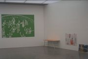

|  |
The latter is meant to bear out the former's provocative contention that the 17th-century Dutch still life, by turning from religious subjects to fetishizing quotidian objects, paved the way for modern consumerism. Unfortunately, the lecture feels stiff and uncinematic, and the documentary material rambling. " but the 1990 How to Live in the German Federal Republic, shot at job-training classes of various types, marshals plenty of evidence to the contrary. Opening with a hospitalized woman proudly declaring her commitment to the resistance and asserting "We don't want a dictator," the film closes with images of Ceausescu's corpse taken after his execution less than two weeks later. Rather than making a straightforward documentary, Farocki and codirector Andrej Ujica have opted for a reflexive approach that pays as much attention to formal concerns as to the political changes themselves. |